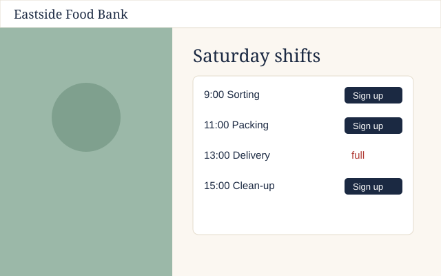

Claude is building
working for 6 minRight now: Editing src/Header.jsx · 12s ago
Latest decision · Ask 2
Use the calm photo and the shift calendar, and show spots left
- ShowingThe shift calendar is up1 min
- ProgressSpots left now count down live4 min
- ProgressScaffolded the page9 min
